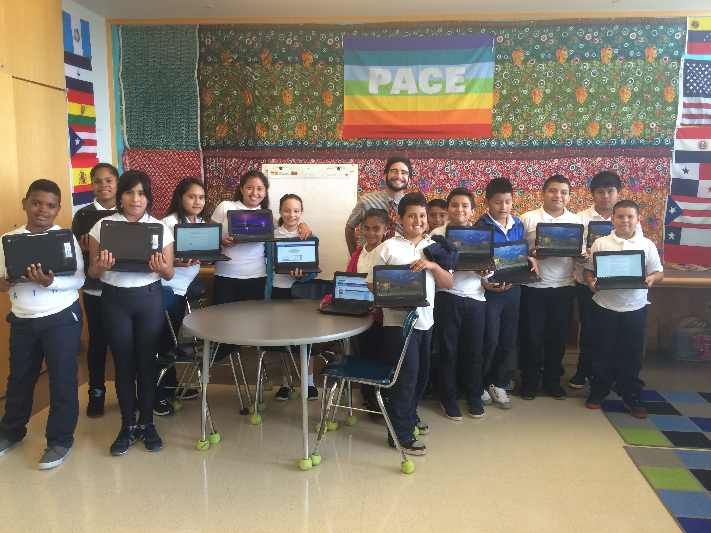

Teachers and Administrators

Interested in bringing introductory computer science to your classroom? We are always looking to expand to new classrooms and would love to come to yours! Please email with your name and school, plus details about your classroom (age, number of students, experience), and we’ll get back to you as soon as we can!
Our current curriculum is designed for middle school students with no computer science experiences, with lessons for an hour a week. However, we are interested in expanding to different grades and levels of prior experience, so please contact us!